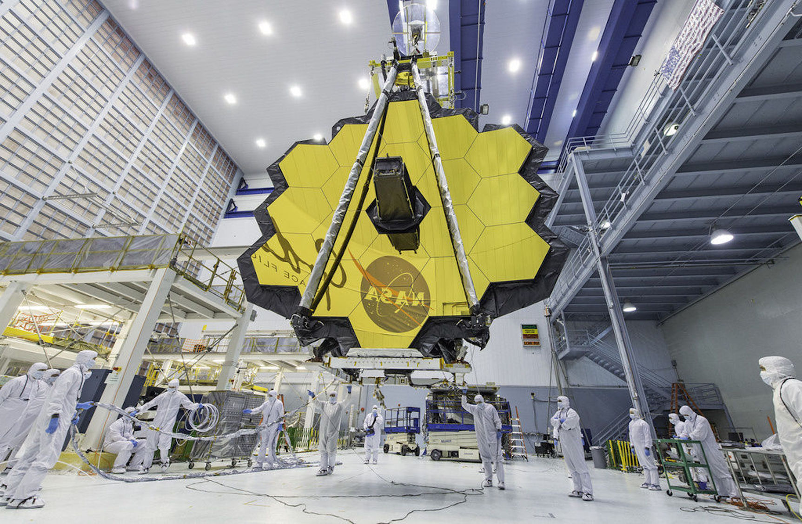
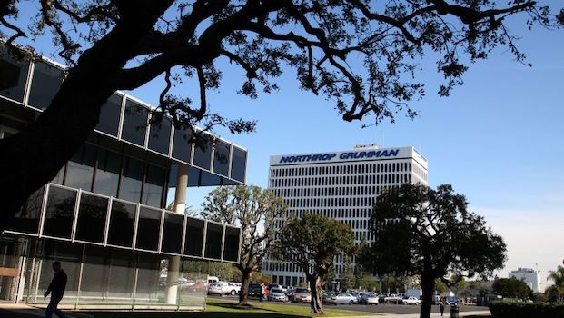

September 15, 2018
Table of Contents
Northrop Grumman Corporation is an American global aerospace and defense technology company that has worked on a wide range of projects ranging from the B-2 and B-21 stealth bombers to the James Webb Space Telescope, an orbiting observatory designed to travel across the universe. Northrop Grumman was founded in 1994 and is headquartered in West Falls Church, VA with the mission to be at the forefront of technology and innovation, delivering superior capability in tandem with maximized cost efficiencies.
In Summer 2019, I interned as a Software Engineer at Northrop Grumman Corporation in Redondo Beach, CA. The internship lasted twelve weeks and there were around 50 software interns located in the Redondo Beach location for Summer 2018. This was my first internship at a real company; and as such, I learned a lot about company culture; day-to-day operations of software engineers at a leader in the aerospace and defense industry; and the pace of work at aerospace and defense industry companies (as compared to tech companies in hindsight after completing my other three internships).
During my internship, I worked as a Backend Software Engineering Intern for the Counter Rocket Artillery and Mortar (C-RAM) team for Missile Defenses Protective Services in Redondo Beach, CA (which was Northrop Grumman's HQ for its Aerospace division). As this was my first internship with a real company, I learned a lot about what software engineers work on at aerospace and defense companies; and how to be successful at these companies.
During my twelve week internship, I worked on an internal tool used by the C-Ram team. I designed and implemented the front and back-end of a Java-based GUI internal tool, which featured GPIO-interfacing functionality.
Despite interning during the summer, there weren't very many intern events held at Northrop Grumman in Redondo Beach. There were only two events: (1) a tour of the campus, which featured a close up tour of the James Webb Space Telescope (JWST), fabrication lab, etc., and (2) an ice breaker-like event between the interns. At the end of the internship, each of the interns gave a presentation on what they worked on over the course of the internship.

The Northrop Grumman campus in Redondo Beach was quite beautiful and consisted of a couple dozen buildings. There is one main cafeteria where most people go to eat; however, lunch is not free. All of the interns got to work together in the "Intern Bay", and we each got our own laptops and equipment. Moreover, there are various lounging areas (e.g. Ping-Pong table and arcade game room).

Overall, this was a good first internship for me. I got to intern at the Redondo Beach location, which is an absolutely gorgeous beach city. My apartment was within a minute walk from the Redondo Beach pier (and beach), where I was able to go for some nice jogs; see dolphins; and eat at the pier restaurants from time to time. I had about 15-20 minute drive to and from the Northrop Grumman campus. In terms of work, I learned that things are incredibly slow paced working for tech at aerospace and defense industry companies, which might be okay as you are nearing the end of your career and don't want to work as hard, but can be quite boring if you are just starting out. The compensation is respectable, but is quite a bit lower than what you could get at tech companies (e.g. Yelp, LinkedIn, Google, Facebook). I would recommend interning at Northrop Grumman if this is one of your first internships as it will ease you into the workforce. I met a lot of really nice and cool people at this internship, and my time in Redondo Beach is definitely a very fond memory.